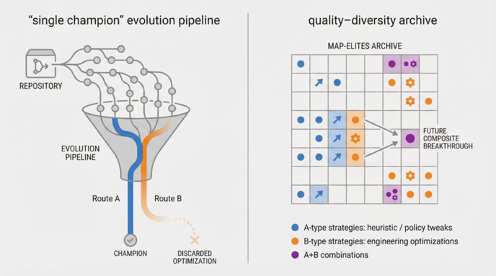
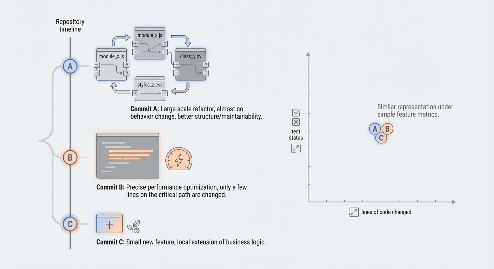

Loreley¶
Whole-repository Quality-Diversity optimization for real git codebases.
Loreley is an automated Quality-Diversity optimization system that evolves entire git repositories, not just single files or scripts. It continuously samples promising commits, asks external agents to plan and implement changes, evaluates them, and archives the best-performing and most diverse variants for later reuse.
Use this page as a high-level overview and a navigation hub into the focused module guides under loreley/ and script/ (see the sidebar navigation).
Challenges and core ideas¶
Loreley is built around three core ideas, each designed to address a concrete challenge in real-world code evolution:
| Challenge in real repositories | Loreley core idea |
|---|---|
| Single-file evolution cannot express cross-module refactors and production changes | Whole-repo evolution |
| Hand-crafted behaviour descriptors do not generalise across projects | Learned behaviour space |
| Demo-style pipelines do not scale to distributed, long-running operation | Production-grade distributed loop |
Related systems include AlphaEvolve, OpenEvolve, and ShinkaEvolve.
Methodology¶
Loreley treats software evolution as quality-diversity search over the commit graph of a real repository, guided by a learned behaviour space and driven by a production-grade distributed loop. Instead of using LLMs as one-shot patch generators, it organises planning, editing, evaluation, and archiving into a repeatable system that can safely explore improvements while remaining auditable (git), testable (evaluator), and operable (scheduler + workers).
System overview¶
At a high level, Loreley sits between your git repository, a pool of LLM-based agents, and a MAP-Elites archive:
flowchart LR
repo["Git repository<br/>(target project)"]
sched["Scheduler<br/>(EvolutionScheduler)"]
queue["Redis / Dramatiq<br/>(job queue)"]
w1["Evolution worker 1"]
wN["Evolution worker N"]
db[("PostgreSQL<br/>(experiments + metrics)")]
archive["MAP-Elites archive<br/>(learned behaviour space)"]
repo --> sched
sched -->|enqueue evolution jobs| queue
queue --> w1
queue --> wN
w1 -->|checkout + push commits| repo
wN -->|checkout + push commits| repo
w1 --> db
wN --> db
db --> archive
archive -->|sample base commits| sched- Scheduler keeps the experiment in sync with the repository, ingests completed jobs, samples new base commits from the MAP-Elites archive, and enqueues evolution jobs.
- Workers check out base commits, call external planning/coding/evaluation agents, create new commits, and persist metrics.
- Archive stores a diverse set of high-performing commits in a learned behaviour space that the scheduler uses to inspire the next round of jobs.
Quick start¶
Requirements¶
- Python 3.11+
uvfor dependency management- PostgreSQL and Redis
- Git (including worktrees; LFS optional)
Install dependencies¶
git clone <YOUR_FORK_OR_ORIGIN_URL> loreley
cd loreley
uv sync
Start PostgreSQL + Redis (recommended for local dev)¶
If you have Docker installed, you can start the required services with:
docker compose up -d postgres redis
Configure¶
All runtime configuration is provided via environment variables and loaded by loreley.config.Settings. Start with:
Copy the example env file:
cp env.example .env
APP_NAME,APP_ENV,LOG_LEVELDATABASE_URLTASKS_REDIS_URL,TASKS_QUEUE_NAME(queue prefix),WORKER_EXPERIMENT_IDOPENAI_API_KEYMAPELITES_EXPERIMENT_ROOT_COMMITSCHEDULER_REPO_ROOT,WORKER_REPO_REMOTE_URLWORKER_EVOLUTION_GLOBAL_GOAL,WORKER_EVALUATOR_PLUGIN
See: Configuration
Run¶
Preflight checks:
uv run loreley doctor --role all
Note: on first start the scheduler performs a repo-state root scan at MAPELITES_EXPERIMENT_ROOT_COMMIT and requires operator approval. In non-interactive environments, pass --yes or set SCHEDULER_STARTUP_APPROVE=true.
uv run loreley scheduler
uv run loreley worker --experiment-id <EXPERIMENT_UUID>
See: Running the scheduler, Running the worker
Core ideas in practice¶
Whole-repo evolution¶
Whole-repo evolution makes the git commit the fundamental unit of search. This solves the practical limitation of single-file optimisation: real improvements often require changing multiple modules, updating configs and build scripts, and keeping tests and tooling intact.
Repository-scale evolution has been demonstrated in the literature (for example, SATLUTION), but many repository-scale loops are champion-based and rulebase-driven: a single “current best” becomes the next baseline, and extensive human-authored rules are used to keep the agent on track. This design can limit diversity and makes quality-diversity methods difficult to realise.

Loreley is designed to be QD-native at repository scale:
- it keeps a MAP-Elites archive of multiple elites across behavioural niches (not a single champion line),
- it samples from those niches as inspirations for new jobs,
- and it uses evaluator gates + repository semantics as the primary source of constraints, minimising dependence on domain-specific rulebases.
Learned behaviour space¶
Quality-diversity methods require a behaviour space. Hand-crafted behaviour descriptors (file counts, line deltas, test counts, etc.) are brittle and often project-specific.

Loreley derives behaviour descriptors from repo-state code embeddings (file-level embeddings cached by git blob SHA and aggregated into a commit vector), optionally reduced with PCA.
Under similar fitness, the archive can preserve structurally different improvements (refactors vs micro-optimisations vs feature shifts) as distinct behavioural niches, enabling exploration without collapsing to a single style of change.
Production-grade distributed loop¶
Production-grade evolution requires more than an agent loop: it needs distributed execution, resource controls, and persistent traceability.
Loreley runs a long-lived loop with:
- a scheduler that ingests completed jobs, samples base commits, and enqueues new jobs,
- a Redis/Dramatiq worker fleet that runs planning/coding/evaluation per job,
- a PostgreSQL-backed store for experiments, commits, metrics, and archive state,
- explicit lifecycle controls (max unfinished jobs, optional total job caps, seed population, best-candidate branch export).
You can run a long optimisation campaign on a repository, scaling workers horizontally, while keeping the evolution process reproducible and observable.
Adoption checklist (is your project a fit?)¶
A project is a strong fit for Loreley when these questions have clear, automated answers:
- Do you have an evaluator that can run unattended and produce structured metrics (plus pass/fail correctness gates)?
- Is the evaluation signal comparable across commits and not dominated by noise?
- Is the per-job evaluation cost acceptable (P50/P95 runtime), and can it be parallelised or staged (smoke test → full benchmark)?
- Do meaningful improvements often require cross-file and cross-module changes?
- Can failures be detected cheaply (compile/test/correctness gates) to avoid wasting full benchmark runs?
- Can the project tolerate continuous creation of job branches / commits (ideally on a dedicated remote or mirror)?
- Is there value in keeping multiple diverse strong solutions (trade-offs, strategies, module-level variants), not just a single best commit?
What you need to integrate a project¶
To hook a repository into Loreley, you typically need:
- Repository info: remote URL/branch, LFS/submodules, reproducible environment (toolchains, containers, hardware).
- Build & test entrypoints: minimal commands for build/test, plus optional staged checks (smoke vs full).
- Evaluator spec: plugin entrypoint, metrics schema, correctness validation, and any benchmark/data access details.
- Goal & constraints: the optimisation objective, non-negotiable constraints, acceptance criteria, and forbidden areas.
- Resources & ops: worker concurrency, CPU/GPU/memory budgets, and runtime/timeouts.
Estimating cost and ROI¶
A practical way to estimate cost/benefit is to run a small pilot (e.g. 20–50 jobs) and measure:
t_job(time per job):
t_job = t_plan + t_code + t_build + t_eval + t_ingest
jobs_per_day ≈ workers * 24 / E[t_job]
p_valid(valid-job rate): fraction of jobs that pass correctness gates and produce usable metrics.- improvement distribution
Δ: fitness(new) − fitness(base) across valid jobs.
From these, you can forecast:
- time-to-first-win: how many valid jobs you typically need to see a meaningful improvement,
- expected best-of-N: how the best improvement grows as you run more valid jobs,
- $ / improvement: combine LLM + compute costs per job with the observed success rate.
Documentation map¶
Use this index as a quick map of the rest of the documentation:
- Configuration
- Global settings
- Database
- Engine and sessions
- ORM models
- Experiments
- Repository & experiment helpers
- Core contracts
- Hot-path contracts
- MAP-Elites core
- Overview & archive
- Preprocessing
- Chunking
- Code embeddings
- Dimensionality reduction
- Sampler
- Snapshots
- Worker pipeline
- Planning agent
- Coding agent
- Evaluator
- Evolution loop
- Commit cards
- Commit summaries
- Artifacts
- Job store
- Worker repository
- Scheduler & tasks
- Scheduler
- Tasks broker
- Tasks workers
- UI (optional)
- UI API (
loreley.api) - Streamlit UI (
loreley.ui) - Operations
- Running the scheduler
- Running the worker
- Running the UI API
- Running the UI
- Resetting the database
Next steps¶
- Start by configuring a small test repository and running the scheduler/worker pair locally.
- Once the basic loop works, plug in a custom evaluator and tune
MAPELITES_*settings. - When you are ready for production, point the scheduler at a long-lived repository clone and supervise both processes with your preferred process manager.